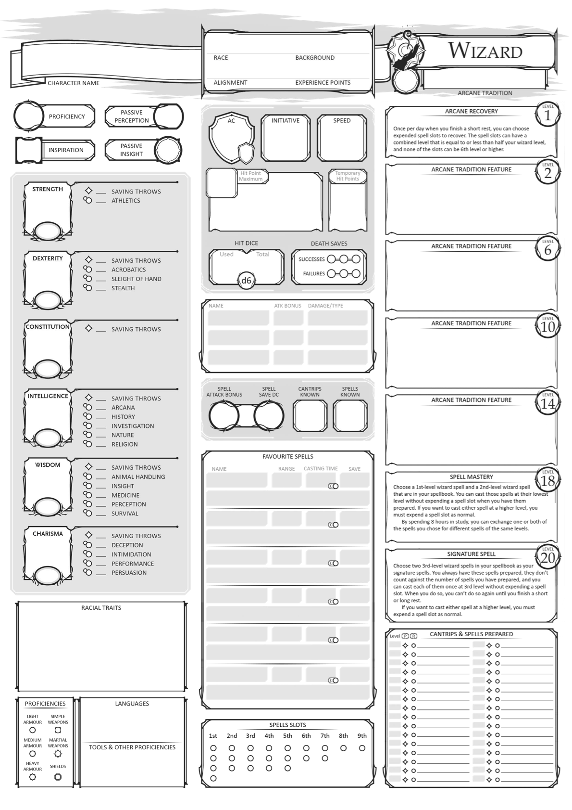
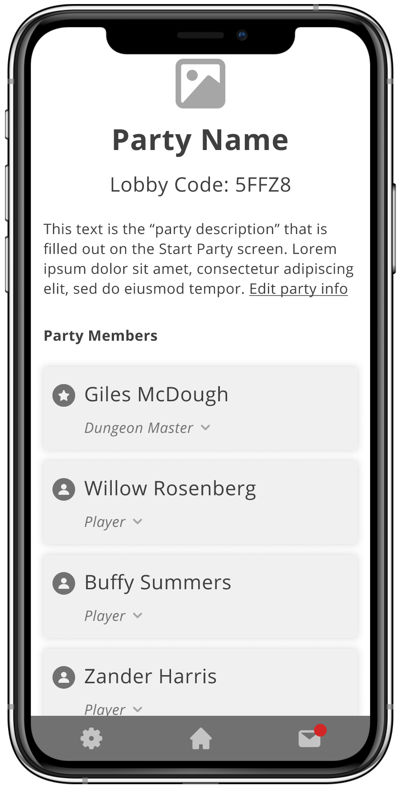
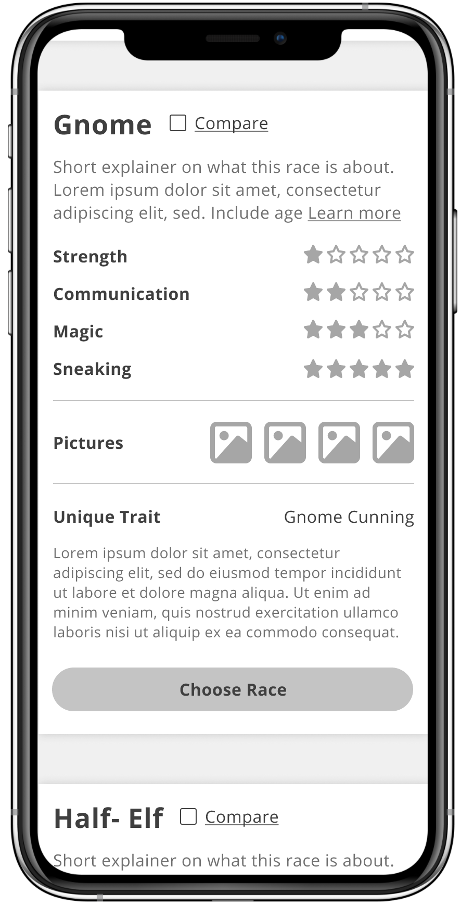

Dungeons & Dragons Character Creation App
Using design thinking principles, I am researching, designing, and testing a mobile app to improve and gamify the character creation process in D&D.
TLDR: Turn character creation into a mobile game that rewards collaboration and improv.
- Software Used: Figma, Illustrator
- 20% faster task completion
The Problem
Dungeons & Dragons has used an outdated, inaccessible, and unavoidable onboarding experience for the nearly 50 years it’s existed. New players have a difficult time discovering the game because there is no easy, user friendly way to get started.
Dungeons & Dragons is one of my favorite hobbies. It lets players escape to worlds beyond their wildest imagination, connect with friends through problem solving and role playing, and flex their creative muscles in new and unique ways.
However, a tabletop, pen-and-paper role-playing game created in the ‘70s comes with some major UX flaws:
Crowded dashboard with hundreds of customizable data points
Entries are limited to arbitrary character limits because of the physical paper
The official character creation guide is two hundred pages long
The process is individual rather than cooperative
Customization options cause the process to take, on average, 1.5 hours

User Interviews
I interviewed 10 people to kick off this project. Some had only ever played D&D once, others for 40+ years, but all of the interviewees agreed that the character creation process was flawed. Players wanted an easier to skim, more interactive creation process.
Sorting Interview Results by Themes

I interviewed 10 people for 60 minutes each. My interviewees ranged from young adults who had only played once, to adults who had been playing and leading others for over 40 years. I translated the interviews into sentiment cards, and sorted them into themes. The major themes I found were:
"I want more cooperation"Players want to know how the rest of the group is making choices, so that they can make complementary decisions. Without that additional context, they second guess their choices.
"This is too much to read"Users can't sift through the hundreds of pages of content quickly enough to make fully informed decisions. They end up choosing whatever they read first which is unsatisfying.
"What do the numbers mean"The mechanics of the game are confusing to new players and it causes character creation to feel opaque. There wasn't a strong connection to how their choices would materially impact gameplay.
"How can I be special"Almost every user wanted a way to make their character unique and interesting. The standard process doesn't create a framework for adding this flavor, or personalization.
User Personas
Three main personas emerged from my interviews and research: players who want to be lead, players who like to lead, and players who want to strike their own path. Balancing these personas requires a flexible product.
1
Dungeon Masters:
Players who like to lead the group in character creation. Dungeon Masters want to successfully get all the players in the room to correctly fill out their character details and be ready to play the game.
2
Researchers:
Researchers like to read everything and anything they can before making a decision. They want to make the most informed choice they possibly can in order to build a character they have in mind.
3
Discoverers:
Discoverers prefer to “go with their gut” and describe a preference to the Dungeon Master and follow their recommendation. They want to be guided through the experience and trust an expert to narrow down their choices.
User Journey
Creating a character has clear, linear steps players must complete in order to accomplish this process. Some of these steps are more exciting than others. Mapping the user journey allowed me to focus on improving the frustrating steps, and amplifying the good ones.

I identified my main persona (the Discoverer) and plotted her positive and negative emotions over the course of creating a character. I found that the experience has a “whiplashing” effect on players; every new step is daunting and slightly frustrating, but becomes interesting and fun once players get used to the idea.
- The main source of negative emotions came from the player’s lack of understanding and information going into each step.
- Players quickly became overwhelmed and started to lose hope that their character would turn out "cool enough".
- Positive emotions came from the excitement of learning something new and seeing a world of possibilities laid before them.
In my interviews, I found that the default order presented by the official game is not ideal for new players. It asks players to provide the more flavorful information (like name, age, appearance, etc) right at the beginning of the experience before many new players have even begun to figure out how the game works.
The Solution
I have begun wireframing and prototyping a game to help players and Dungeon Masters efficiently complete the character creation process with collaborative and competitive game mechanics.
1
Onboarding
Let users connect and play no matter where they are.
Unique accounts allow for data to be stored so that players can return to characters and parties whenever they want.

2
Creating a Community
Create a "party" where players can see each other's choices in real time.
Allow for a seperate user journey for Dungeon Masters, so that DMs can customize the creation process.
3
Contextualizing Data
Surface more data in easy-to-skim, sortable tables.
Create a standardized rating system for characteristics, so that users can quickly compare choices.

4
Gamification
Create more opportunities for fun with mini-games.
To allow for both research and "gut" play styles, some choices are made through games like quizzes.
Key Learnings & Next Steps
Initial user testing shows that users are able to complete character creation 20% faster than with the original method. As I am still in the wireframing stage, there is a lot more work to be done with this project.
Next steps include:
1
Ideate minigame concepts and where to surface them where they can have the most impact
2
Test for major gaps in the data - what more info do users need to fully understand a characteristic?
3
Explore branding and styling
4
Complete onboarding prototype for user testing
5
Explore alternative user flow for Dungeon Masters
Next Case Study 
Proprietary Survey Builder
Software Product Profile
Developed with Love by Amelia Peacock 2020